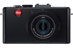

器材库 > 不可换镜头数码相机 > D-LUX 5

规格总览
发布日期
2010-09-21
厂家推荐价格
630.00 （欧元）
影像规格
影像传感器
CCD
影像传感器尺寸
1/1.63英寸
总像素
1130万
有效像素
1010万
静态图像尺寸
[4:3]3648×2736；[3:2] 3776 ×2520；[16:9]3968 ×2232；[1:1] 2736 × 2736
静态图像格式
JPEG, RAW
短片尺寸
[4:3]640×480 @30 fps (Motion JPEG) , 320×240@30 fps (Motion JPEG) ;[16:9] 848×480 @30 fps (Motion JPEG) ;HD Video 1280×720, 60p ；1280× 720@30fps
短片格式
QuickTime, MPEG4-AVC/H.264 , Motion-JPEG
镜头和对焦
镜头结构
10片/9组
非球面镜片
3片
焦距
5.1mm-19.2mm
等效35mm画幅焦距
24mm-90mm
最大光圈
f/2-f/3.3
光学变焦
3.8倍
数码变焦
4倍
最近对焦距离
50cm, 微距广角1cm, 长焦30cm
曝光控制
测光模式
中央重点测光, 多分区评价测光, 点测光
曝光模式
Auto, P（程序自动曝光）, S（快门速度优先自动曝光）, M（手动测光曝光）
场景模式
肖像，美肤模式，自拍像，风景，全景辅助，运动，夜景人像，夜景，美食，聚会，烛光，婴儿1，婴儿2，宠物，日落，远景，高速连拍，闪光灯，天空，焰火，海滩，雪景，空中摄影，彩色模式
快门速度
60-1/4000秒
曝光补偿
±3EV以1/3EV级调整
ISO感光度
80, 100, 200, 400, 800, 1600, 3200, 6400, 可扩展至100-12800
白平衡
日光, 阴天, 自定义, 阴影, 自动, 钨丝灯, 手动白平衡
自拍
10秒, 2秒
连拍
2.5fps
闪光灯
内置闪光灯
固定
闪光模式
自动, 减轻/消除红眼, 关闭, 开启, 预闪
闪光涵盖范围
80– 7.2米
取景规格
LCD类型
彩色TFT LCD
LCD尺寸
3.0英寸
LCD像素
46万
视野率
100%
文件输入/输出
内置存储容量
40MB
存储卡
SD/SDHC, SDXC
数据接口
USB2.0
视频/音频接口
Video 输出 (NTSC/PAL), HDMI Mini 输出
支持打印协议
PictBridge
电源
电池
Leica BP-DC 10 可充电电池（3.6V，1250mAh）
外观
颜色
黑色
尺寸
110× 66 ×25mm
重量
155g
其它
工作温度
0-40℃
工作湿度
10-80%
附件
相机镜头盖，电池充电器（Leica BC-DC 10），电池（Leica BP-DC 10），背带，AV线，USB线，光盘说明书
布衣秋叶2014-02-01 13:184.94 分
操作性 5.00功能性 5.00美观性 5.00趣味性 5.00耐用性 5.00性价比 4.50解像力 5.00色彩还原 5.00
开颂2013-12-19 20:564.06 分
操作性 4.50功能性 4.50美观性 5.00趣味性 4.00耐用性 5.00性价比 2.50解像力 4.00色彩还原 3.00
闻墨2012-05-14 23:415 分
操作性 5.00功能性 5.00美观性 5.00趣味性 5.00耐用性 5.00性价比 5.00解像力 5.00色彩还原 5.00
闻墨2012-04-28 14:24
panyuwenCN2011-12-15 09:194.31 分
操作性 5.00功能性 5.00美观性 4.50趣味性 4.50耐用性 4.50性价比 3.50解像力 3.50色彩还原 4.00
wwzzgg2011-05-26 09:063.63 分
操作性 4.50功能性 4.00美观性 4.00趣味性 3.00耐用性 4.50性价比 0.50解像力 4.50色彩还原 4.00
单反小子2011-05-11 02:184.5 分
操作性 4.50功能性 4.50美观性 5.00趣味性 5.00耐用性 4.00性价比 4.00解像力 4.50色彩还原 4.50
若农2011-02-10 21:194.56 分
操作性 4.50功能性 4.50美观性 5.00趣味性 4.50耐用性 4.50性价比 4.00解像力 4.50色彩还原 5.00
zzjoezz2010-10-21 07:234.69 分
操作性 4.50功能性 5.00美观性 4.50趣味性 5.00耐用性 5.00性价比 3.50解像力 5.00色彩还原 5.00
产品图 / 样片
徕卡 D-LUX 5
评测 / 相关文章
- 详细内容 （存档）
- 徕卡随身相机D-lux5测试 （存档）
- ［资讯］DIY：徕卡DLUX5拆解 （存档）
- ［试用］钛金版徕卡D-Lux 5海外评测 （存档）
- ［资讯］徕卡推出Uniform Experiment限量版D-Lux 5 （存档）
- ［资讯］徕卡D-LUX 5三件套 日本限量发售 （存档）
- ［行情］徕卡D-lux5套装版热卖 （存档）
- ［行情］徕卡专场兔年迎新春精彩促销第七波！ （存档）
- ［影像］徕卡D-lux5泡菜室外试片 （存档）
- ［资讯］Artisan&Artist推出徕卡D-Lux 5专用皮套 （存档）
- ［资讯］Aperture 3/ iPhoto11升级 （存档）